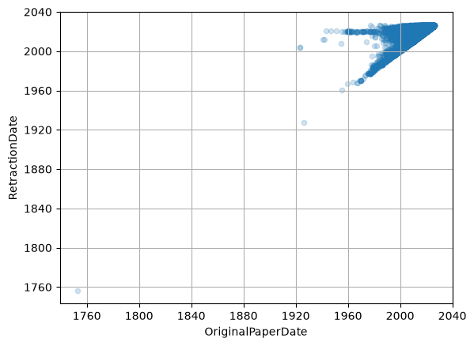
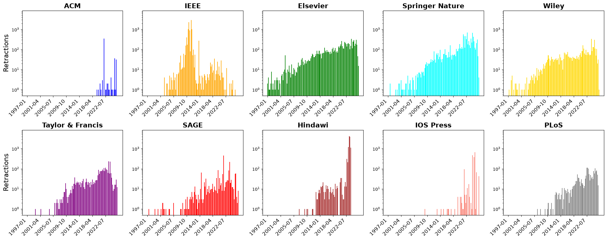
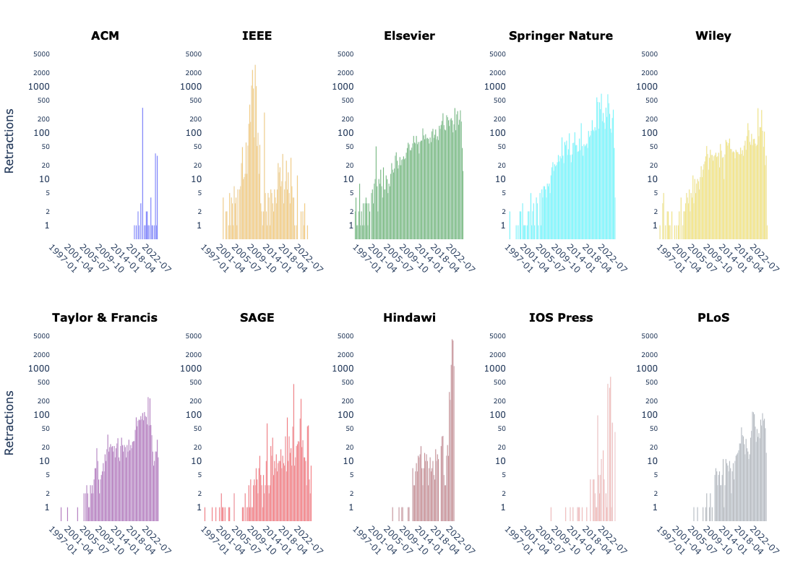

import pandas
import os
datafolder = "retraction-watch-data/"
csvfile = "retraction_watch.csv"df = pandas.read_csv(os.path.join(datafolder, csvfile), encoding='iso-8859-1')df.columnsIndex(['Record ID', 'Title', 'Subject', 'Institution', 'Journal', 'Publisher',
'Country', 'Author', 'URLS', 'ArticleType', 'RetractionDate',
'RetractionDOI', 'RetractionPubMedID', 'OriginalPaperDate',
'OriginalPaperDOI', 'OriginalPaperPubMedID', 'RetractionNature',
'Reason', 'Paywalled', 'Notes', 'Unnamed: 20'],
dtype='str')df.head()| Record ID | Title | Subject | Institution | Journal | Publisher | Country | Author | URLS | ArticleType | ... | RetractionDOI | RetractionPubMedID | OriginalPaperDate | OriginalPaperDOI | OriginalPaperPubMedID | RetractionNature | Reason | Paywalled | Notes | Unnamed: 20 | |
|---|---|---|---|---|---|---|---|---|---|---|---|---|---|---|---|---|---|---|---|---|---|
| 0 | 72186.0 | Social, economic and environmental vulnerabili... | (B/T) Business - Economics;(BLS) Agriculture;(... | Institute of Agricultural Education and Extens... | Science of The Total Environment | Elsevier | Belgium;China;Czech Republic;Estonia;Iran;Neth... | Saeedeh Nazari Nooghabi;Hossein Azadi;Luuk Fle... | NaN | Research Article; | ... | 10.1016/j.scitotenv.2026.182004 | 42379914.0 | 11/10/2021 0:00 | 10.1016/j.scitotenv.2021.151519 | 34774624.0 | Retraction | Concerns/Issues about Authorship/Affiliation;I... | No | Saeedeh Nazari Nooghabi a, Hossein Azadi b c d... | NaN |
| 1 | 72183.0 | High-throughput screening of ancient forest pl... | (HSC) Medicine - Drug Design;(HSC) Medicine - ... | Henan Province International Collaboration Lab... | Environment International | Elsevier | China;Denmark;India;Malaysia;Norway;Taiwan | Yiyang Li;Nyuk Ling Ma;Huiling Chen;Jiateng Zh... | NaN | Research Article; | ... | 10.1016/j.envint.2023.108279 | 0.0 | 10/29/2023 0:00 | 10.1016/j.envint.2023.108279 | 37924601.0 | Retraction | Compromised Peer Review;Objections by Author(s... | No | See also: https://pubpeer.com/publications/39A... | NaN |
| 2 | 72181.0 | Nitrogen transformation in slightly polluted s... | (BLS) Microbiology;(ENV) Ground/Surface Water; | Key Laboratory for Technology in Rural Water M... | Science of The Total Environment | Elsevier | China;South Korea;Sri Lanka;United States | Yinfeng Xia;Lifang Zhu;Nan Geng;Debao Lu;Cundo... | NaN | Research Article; | ... | 10.1016/j.scitotenv.2026.182090 | 42521574.0 | 3/18/2022 0:00 | 10.1016/j.scitotenv.2022.154623 | 35307444.0 | Retraction | Compromised Peer Review;Investigation by Journ... | No | See also: https://pubpeer.com/publications/9DF... | NaN |
| 3 | 72175.0 | Porous carbon polyhedrons with exclusive Cu-Nx... | (PHY) Energy;(PHY) Materials Science; | State Key Laboratory of Marine Resource Utiliz... | International Journal of Hydrogen Energy | Elsevier | China | Yalin Liu;Peng Rao;Mingjun Zhong;Ruisong Li;Ji... | NaN | Research Article; | ... | 10.1016/j.ijhydene.2026.156515 | 0.0 | 6/30/2021 0:00 | 10.1016/j.ijhydene.2021.06.057 | 0.0 | Retraction | Concerns/Issues about Authorship/Affiliation;I... | No | NaN | NaN |
| 4 | 72174.0 | The Existence of Solution for k-Dimensional Sy... | (PHY) Mathematics; | Department of Mathematics, Faculty of Science,... | Mediterranean Journal of Mathematics | Springer - Nature Publishing Group | Iran | Mohammad Esmael Samei;Vahid Hedayati;Ghorban K... | NaN | Research Article; | ... | 10.1007/s00009-021-01922-2 | 0.0 | 1/11/2020 0:00 | 10.1007/s00009-019-1471-2 | 0.0 | Retraction | Euphemisms for Plagiarism;Objections by Author... | No | NaN | NaN |
5 rows × 21 columns
df.dropna(subset=['RetractionDate', 'OriginalPaperDate'], inplace=True)df['RetractionDate'] = pandas.to_datetime(df['RetractionDate'], errors='coerce', format='mixed')
df['OriginalPaperDate'] = pandas.to_datetime(df['OriginalPaperDate'], errors='coerce', format='mixed')df.plot.scatter('OriginalPaperDate', 'RetractionDate', alpha=0.2, grid=True)
## This code adapted from Jonas Oppenlaender https://github.com/retractions/retractions.github.io/tree/master
import pandas as pd
import matplotlib.pyplot as plt
AXIS_FONTSIZE = 16
TICK_FONTSIZE = 12
LABEL_FONTSIZE = 14
PUBLISHERS = {
'ACM': ['Association for Computing Machinery (ACM)'],
'IEEE': ['IEEE: Institute of Electrical and Electronics Engineers'],
'Elsevier': ['Elsevier', 'Elsevier - Cell Press'],
'Springer Nature': ['Springer', 'Springer - Nature Publishing Group', 'Springer - Biomed Central (BMC)'],
'Wiley': ['Wiley'],
'Taylor & Francis': ['Taylor and Francis', 'Taylor and Francis - Dove Press'],
'SAGE': ['SAGE Publications'],
'Hindawi': ['Hindawi'],
'IOS Press': ['IOS Press (bought by Sage November 2023)'],
'PLoS': ['PLoS'],
}
PUBLISHER_COLORS = { 'ACM': 'blue',
'IEEE': 'orange',
'Elsevier': 'green',
'Springer Nature': 'cyan',
'Wiley': 'gold',
'Taylor & Francis': 'purple',
'SAGE': 'red',
'Hindawi': 'brown',
'IOS Press': 'salmon',
'PLoS': 'grey',}
def plot_small_multiples(df, freq, log_scale, output_file, figsize=(20, 8)):
"""Plot a 2x4 grid of bar charts, one per publisher.
Parameters
----------
df : DataFrame with 'Publisher' and 'RetractionDate' columns.
freq : 'M' for monthly, 'Q' for quarterly.
log_scale : bool — use logarithmic y-axis.
output_file : str — path for the saved PDF figure.
figsize : tuple — overall figure size.
"""
# Compute period counts per publisher and determine global date range
period_counts = {}
all_min, all_max = None, None
for label, rw_names in PUBLISHERS.items():
pub_df = df[df['Publisher'].isin(rw_names)]
counts = pub_df['RetractionDate'].dt.to_period(freq).value_counts().sort_index()
period_counts[label] = counts
if len(counts) > 0:
pmin, pmax = counts.index.min(), counts.index.max()
all_min = pmin if all_min is None else min(all_min, pmin)
all_max = pmax if all_max is None else max(all_max, pmax)
# plot all x-values
# full_range = pd.period_range(start=all_min, end=all_max, freq=freq)
# instead, enforce start date of 1997 (ACM-DL launched October 1997)
start_date = pd.Period('1997-01', freq=freq)
# Ensure we don't cut off data if the max date is somehow older than 1997 (unlikely but safe)
if all_max < start_date:
print("Warning: Data ends before 1997 start date.")
return
# Create range from 1997 to the actual data end
full_range = pd.period_range(start=start_date, end=all_max, freq=freq)
# Reindex all publishers to the shared range
for label in period_counts:
period_counts[label] = period_counts[label].reindex(full_range, fill_value=0)
# Calculate global max for BOTH linear and log
global_ymax = max(s.max() for s in period_counts.values())
ncols = 5
nrows = 2
fig, axes = plt.subplots(nrows, ncols, figsize=(20, 8), squeeze=False)
for idx, (label, counts) in enumerate(period_counts.items()):
row, col = divmod(idx, ncols)
ax = axes[row][col]
color = PUBLISHER_COLORS[label]
ax.bar(range(len(full_range)), counts.values, width=0.8, color=color, alpha=0.9)
ax.set_title(label, fontsize=AXIS_FONTSIZE, fontweight='bold')
# Target roughly 6-8 labels per plot, regardless of dataset length
total_bars = len(full_range)
target_labels = 7
step = max(1, total_bars // target_labels)
tick_positions = list(range(0, len(full_range), step))
tick_labels = [full_range[i].start_time.strftime('%Y-%m') for i in tick_positions]
ax.set_xticks(tick_positions)
ax.set_xticklabels(tick_labels, rotation=45, ha='right', fontsize=TICK_FONTSIZE)
if log_scale:
ax.set_yscale('log')
# Set log limits: bottom at 0.5 or 1 to avoid log(0) issues, top to global max
ax.set_ylim(0.5, global_ymax * 2)
else:
ax.set_ylim(0, global_ymax * 1.05)
# Only show y-label on leftmost column
if col == 0:
ax.set_ylabel('Retractions', fontsize=AXIS_FONTSIZE)
# Hide unused subplots (if any)
for idx in range(len(PUBLISHERS), nrows * ncols):
row, col = divmod(idx, ncols)
axes[row][col].set_visible(False)
freq_label = 'Month' if freq == 'M' else 'Quarter'
scale_label = ' (log)' if log_scale else ''
# fig.suptitle(f'Retractions Per {freq_label}{scale_label}', fontsize=14, fontweight='bold', y=1.0)
fig.tight_layout()
plt.savefig(output_file, format='eps', bbox_inches='tight')
print(f'Saved {output_file}')
plt.show()
plt.close()plot_small_multiples(df, freq='Q', log_scale=True,
output_file='entries-per-quarter-log-nonoverlap.eps')The PostScript backend does not support transparency; partially transparent artists will be rendered opaque.Saved entries-per-quarter-log-nonoverlap.eps
# Code converted from Matplotlib to Plotly by Claude, with some minor modifications by Miquel Perello Nieto
import plotly.graph_objects as go
from plotly.subplots import make_subplots
import pandas as pd
import numpy as np
def plot_small_multiples_plotly(df, freq, log_scale, output_file, figsize=(20, 8)):
"""Plot a 2x5 grid of bar charts, one per publisher.
Parameters
----------
df : DataFrame with 'Publisher' and 'RetractionDate' columns.
freq : 'M' for monthly, 'Q' for quarterly.
log_scale : bool — use logarithmic y-axis.
output_file: str — path for the saved PDF/PNG figure (extension determines format).
figsize : tuple — (width, height) in inches; converted to pixels at 96 dpi.
"""
# ------------------------------------------------------------------
# 1. Compute period counts per publisher and determine global date range
# ------------------------------------------------------------------
period_counts = {}
all_min, all_max = None, None
for label, rw_names in PUBLISHERS.items():
pub_df = df[df["Publisher"].isin(rw_names)]
counts = (
pub_df["RetractionDate"]
.dt.to_period(freq)
.value_counts()
.sort_index()
)
period_counts[label] = counts
if len(counts) > 0:
pmin, pmax = counts.index.min(), counts.index.max()
all_min = pmin if all_min is None else min(all_min, pmin)
all_max = pmax if all_max is None else max(all_max, pmax)
# Enforce start date of 1997 (ACM-DL launched October 1997)
start_date = pd.Period("1997-01", freq=freq)
if all_max < start_date:
print("Warning: Data ends before 1997 start date.")
return
full_range = pd.period_range(start=start_date, end=all_max, freq=freq)
# Reindex all publishers to the shared range
for label in period_counts:
period_counts[label] = period_counts[label].reindex(full_range, fill_value=0)
global_ymax = max(s.max() for s in period_counts.values())
# ------------------------------------------------------------------
# 2. Build subplot grid
# ------------------------------------------------------------------
ncols, nrows = 5, 2
publisher_items = list(period_counts.items())
n_publishers = len(publisher_items)
# subplot_titles pads empty strings for unused cells so titles align
subplot_titles = [label for label, _ in publisher_items]
subplot_titles += [""] * (nrows * ncols - n_publishers)
fig = make_subplots(
rows=nrows,
cols=ncols,
subplot_titles=subplot_titles,
horizontal_spacing=0.06,
vertical_spacing=0.18,
)
# ------------------------------------------------------------------
# 3. Add one Bar trace per publisher
# ------------------------------------------------------------------
x_indices = list(range(len(full_range)))
# Target ~7 tick labels regardless of dataset length
total_bars = len(full_range)
step = max(1, total_bars // 7)
tick_positions = list(range(0, total_bars, step))
tick_labels = [full_range[i].start_time.strftime("%Y-%m") for i in tick_positions]
for idx, (label, counts) in enumerate(publisher_items):
row, col = divmod(idx, ncols)
row += 1 # Plotly rows are 1-indexed
col += 1
fig.add_trace(
go.Bar(
x=x_indices,
y=counts.values,
marker_color=PUBLISHER_COLORS[label],
marker_opacity=0.9,
width=0.8,
showlegend=False,
name=label,
),
row=row,
col=col,
)
# Axis keys are 'xaxis', 'xaxis2', … for subplot (1,1), (1,2), …
axis_suffix = "" if idx == 0 else str(idx + 1)
xaxis_key = f"xaxis{axis_suffix}"
yaxis_key = f"yaxis{axis_suffix}"
fig.layout[xaxis_key].update(
tickvals=tick_positions,
ticktext=tick_labels,
tickangle=45,
tickfont=dict(size=TICK_FONTSIZE),
)
y_axis_update = dict(tickfont=dict(size=TICK_FONTSIZE))
if log_scale:
y_axis_update.update(
type="log",
range=[
-0.3, # log10(0.5) ≈ -0.3
np.log10(global_ymax * 2), # headroom above max
],
minorloglabels="complete",
)
else:
y_axis_update.update(
type="linear",
range=[0, global_ymax * 1.05],
)
# Show y-axis label only on the leftmost column
if col == 1:
y_axis_update["title"] = dict(
text="Retractions", font=dict(size=AXIS_FONTSIZE)
)
fig.layout[yaxis_key].update(**y_axis_update)
# ------------------------------------------------------------------
# 4. Global layout
# ------------------------------------------------------------------
width_px = int(figsize[0] * 96)
height_px = int(figsize[1] * 96)
fig.update_layout(
width=width_px,
height=height_px,
bargap=0.1,
plot_bgcolor="white",
paper_bgcolor="white",
margin=dict(l=50, r=20, t=60, b=60),
)
# Bold subplot titles (annotation objects created by make_subplots)
for annotation in fig.layout.annotations:
annotation.update(font=dict(size=AXIS_FONTSIZE, color="black"), font_weight="bold")
# ------------------------------------------------------------------
# 5. Save and show
# ------------------------------------------------------------------
# Plotly write_image supports: .pdf .svg .png .jpeg .webp
# Replace .eps with .pdf in output_file if you were saving EPS before
fig.write_image(output_file)
print(f"Saved {output_file}")
fig.show()plot_small_multiples_plotly(df, freq='Q', log_scale=True,
output_file='entries-per-quarter-log-nonoverlap.svg')Saved entries-per-quarter-log-nonoverlap.svg